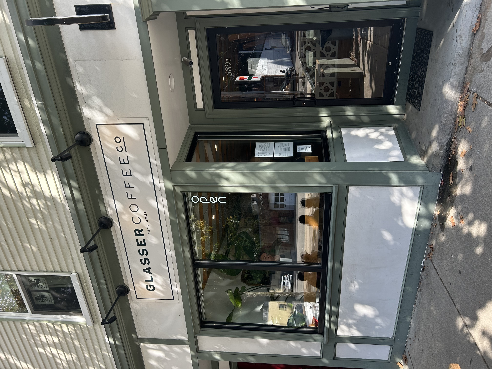
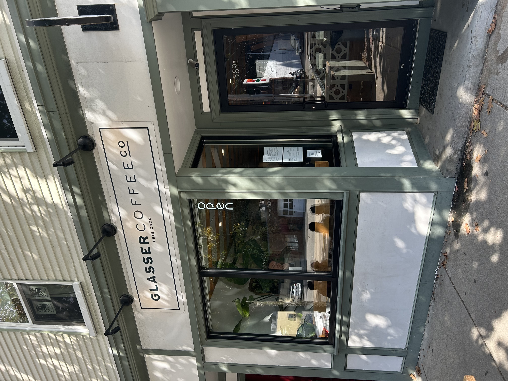

Glasser Coffee Co. Drinks
 

Glasser Coffee Co. had a beautiful ambience as soon as you walked in, with art on the walls and houseplants. It was bustling for being in Brighton, with almost all the tables full. Read on for our ratings and drink descriptions!
7.1/10
Drinks 6.6/10
Price $$
Rose Matcha
The Rose Matcha latte was subtle; with notes of freshness from the rose syrup and the comforting earthiness of the matcha, upon the first sip, it had a good balance of matcha flavor and sweetness. Nevertheless, as I continued through the latte, I didn’t notice anything new develop. In fact, I didn’t notice anything at all. The earthiness and sweetness I was introduced to in the first sip dissipated. All I was left with was warm milk with a fresh aftertaste that rendered any hint of the matcha flavors null.
4.7/10
Mocha
As soon as you took a sip of the mocha, you could taste the uniqueness of whatever chocolate flavoring they had used. It was rich and sweet, but a little too sweet for my taste. The chocolate masked the taste of the coffee a little too much, and I wished they complemented each other more. The mocha was still good however, a definite step up from your generic coffee shop.
7.2/10
London Haze
The rose city genmaicha tea used in this drink, described on their website as “bergamot green tea with a hint of roasted rice”, was deliciously balanced; the roasted flavor of the tea complemented the grassiness of the green tea, and I appreciated this spin on the classic London Fog. The drink was also not too sweet, which was very welcome. However, while the flavor was great, its strength was not enough and tasted a little too milky even as the tea bag continued sitting.
7.3/10